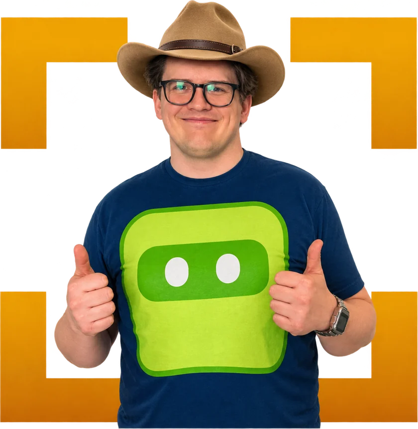

What each workshop covers, what to set up before you sit down, and where the slides, repos and labs are.
16 workshops10 with material postedUpdated MST
GTA VIdrops Thu 19 Nov. Attention span remaining:
-days--hrs--min--sec
It's out. If you see me at the conference, no you didn't.

Unofficial
Explore
Workshops by NAF Framework block
The NAF Network Automation Framework splits automation into building blocks. Tap one to see which workshops dig into it.
How the workshops spread across the framework
core focus touches it. Only D4 runs the full loop through all six blocks. Tap any block to filter.
User interface layer
Presentation
Where people meet the automation: dashboards, CLI, chat, ITSM and approvals. It works both ways, so you can view state, start tasks and approve changes.
Not a framework block. These are the habits the framework expects under every component: Git, CI/CD, testing and documented APIs, plus the newer AI-assisted way of building them.
From Intent to Execution: Nautobot and Ansible, Better Together
Mon 16 Nov · 09:00–13:00 Room not posted
Use Nautobot as the source of truth driving Ansible/AWX: dynamic inventory, Config Contexts, Dynamic Groups, GraphQL-rendered configs, Job Buttons, writing state back, and event-triggered workflows with approval.
NAF · · +2
Setup, notes & people
Before you start
Bring a laptop with a browser and a charger. Nothing to install.
Your cloud lab link and password arrive by email (Nautobot, AWX, two Arista switches).
You should have run an Ansible playbook before. No Nautobot, AWX or Python experience needed.
Good to know
AWX stands in for Ansible Automation Platform, so the concepts carry over directly.
People
Israel Pineda, Brandon Donohoe, Nikos Kallergis, Chris Murray
Level
Net Intermediate · Linux Intermediate · Prog Intermediate
NAF Framework
Nautobot is the intent, Ansible executes, and AWX workflows with approvals orchestrate. Also touches Presentation, Collector.
Design Driven Automation: Architect, Validate and Deploy an EVPN VXLAN Fabric with Arista AVD
Mon 16 Nov · 14:00–18:00 Room not posted
Architect, validate and deploy a leaf-spine EVPN/VXLAN fabric as code with arista.avd, pyavd and ANTA, covering Day 0 and Day 2 plus multi-vendor extension.
Build, test and deploy automations in BackBox (Kilter) in a live lab: backup, compliance, drift remediation, scheduling, and change verification with rollback.
Open Source Design-Driven Automation: From Fabric Intent to Running Config with Infrahub and AVD
Tue 17 Nov · 09:00–13:00 Room not posted
An open-source pipeline on the NAF framework: Infrahub as the intent source, AVD generating per-device config, and Ansible pushing to a Containerlab fabric.
The three labs (Infrahub, AVD, and both together) run in Instruqt, which asks for your name and work email first. Finishing one lab doesn't open the next, so go back to the labs page to start the next one.
Alex posted a Google Meet link in Slack for anyone who couldn't make it in person.
People
Adam Byczkowski, Damien Garros, Pete Crocker, Alex Gittings, Jordan Hemann, Noel Thompson, Carl Buchmann
Level
Net Intermediate · Linux Beginner · Prog Beginner
NAF Framework
Alex says the workshop centres on the Intent block, with Infrahub. The AVD lab deploys with Ansible and the Arista collection, which touches Executor and Orchestration. Also touches Executor, Orchestration.
Open source
Infrahub (community), AVD, Ansible and Containerlab are all open source.
Make sure your work VPN doesn't block SSH to Google Cloud.
You get an instruction card and your own lab instance on the day.
Good to know
The lab repo has every section's instructions and runs free in GitHub Codespaces, so you can redo it afterwards. The workshop VMs are deleted when the session ends, so save your work to your laptop.
Reda posted a Teams link in Slack for anyone stuck on a delayed flight.
People
Reda Laichi, Saju Salahudeen, Amer Fakhar
Level
Net Beginner · Linux Beginner · Prog Beginner
NAF Framework
SONiC as the NOS, with gNMI/OpenConfig telemetry and automated config deployment. Also touches Executor, Observability.
Open source
SONiC, FRR, Containerlab and gNMI/OpenConfig are open source.
D1Network Automation NerdsMostly openMaterialSold out
AI for the Network Forward Engineer: Agents & Application Evaluation
Tue 17 Nov · 14:00–18:00 Room not posted
Build a network co-pilot on local and cloud LLMs in a browser lab: prompt engineering, Pydantic, a LangChain agent, a Streamlit UI, and evaluation and hallucination testing.
Emulate a 200+ router data centre fabric with Containerlab and FRRouting, covering numbering schemes, scripts versus templates, and scaling on limited compute.
NAF+2
Setup, notes & people
Before you start
A FAQ went out by email.
Good to know
Expect it to be interactive and a bit messy: scripts are built live with Claude instead of showing finished work.
Russ is pushing the scripts and outline docs to a git repo as they're built, so you can grab them afterwards. The repo link isn't posted yet.
Russ made it to Tucson and is setting up a Zoom for people stuck travelling. Watch the Slack channel for the link.
People
Russ White, Derick Winkworth
Level
Net Advanced · Linux Intermediate · Prog Intermediate
NAF Framework
Emulating a 200+ router fabric with Containerlab and FRR, with scripts generated live. Also touches Intent, Practices.
The Self Driving Network: From Drift Detection to Autonomous Remediation with Streaming Telemetry
Tue 17 Nov · 14:00–18:00 Room not posted
A closed loop that detects and automatically fixes config and state drift on a Containerlab network (Juniper cRPD, cSRX, Alpine), built from NAF framework pieces: NetBox/YAML/Excel intent, Telegraf/gNMI, InfluxDB/Kapacitor, a FastAPI orchestrator, PyEZ/Ansible, and Grafana/ntfy with approve/reject.
NAF · · · · ·
Setup, notes & people
Before you start
Look for the email with your VM's SSH Host entry and private key.
Install VS Code and the Remote - SSH extension.
Test from your laptop: ssh naf-ac6-ws-vm
Good to know
Use cases: BGP peer-as drift, logging drift, a prefix-limit leak, and swap-a-block.
The proctors say there will be a remote option, and they'll post the link in the Slack channel.
People
David Roy, Mark Harman, Jessica Garrison
Level
Net Intermediate · Linux Intermediate · Prog Intermediate
NAF Framework
The full NAF loop: NetBox/YAML intent, Telegraf/gNMI collection, InfluxDB/Kapacitor, the NAF orchestrator, PyEZ/Ansible, and Grafana/ntfy.
Workshop wifi: use the Autocon6 SSID, which is set aside for workshops.
Many workshops offer a recording or remote option because of flight cancellations. Check the workshop's Slack channel.
Went to a Monday workshop? The organisers' feedback survey is at surveymonkey.com/r/ac6ws-mon.
"Open source" means the whole stack is free and open. "Mostly open" means open-source tooling with some vendor kit or SaaS. "Vendor product" means it's mainly a tutorial for a commercial product. The Free & open source toggle hides that last group.
The NAF Framework mapping is a best guess from each workshop's description. It isn't an official NAF classification.